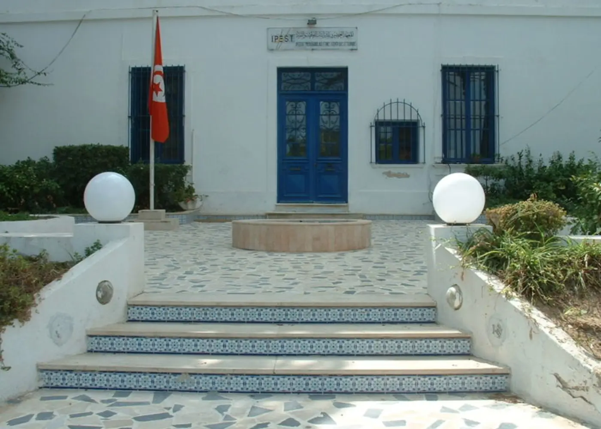

01Tunisia · 2019–2021
Building the mathematical foundation
At IPEST, the rhythm of the preparatory programme taught me how to work through difficult material under pressure. Mathematics and physics became a way to decompose a problem, test an argument and keep going when the answer was not immediate.
- Intensive mathematics and physics
- Competitive-exam preparation
- A demanding collective environment